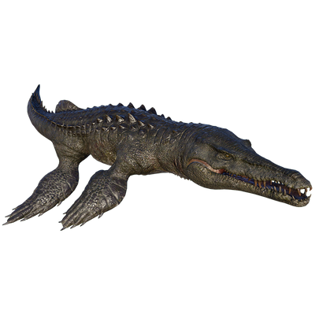

Useful Website
A genus of the Pliosauridae, the notorious Liopleurodon is one of the largest marine reptiles. Its name means ‘smooth-sided teeth’, and this fearsome apex predator patrolled the oceans of the Mid-Late Jurassic Period using its rows of sharp teeth and powerful jaws to prey on other giant reptiles of the period. Liopleurodon’s hunting efforts are aided by a strong sense of smell that allows it to locate its targets, while its large fins propel the reptile across seas at high speed.
